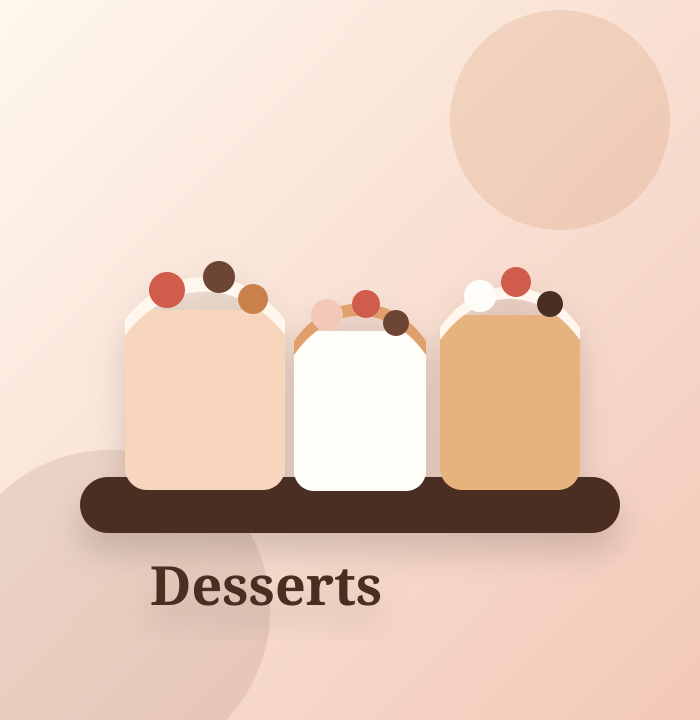

Кава
Еспресо, американо, лате, капучино, мак'ято та улюблені кавові напої для ранку й перерви.
MAK'YATO — затишна кав'ярня для ранкової кави, десертів після навчання, швидкого перекусу і вечорів на літній терасі.
Тут хочеться затриматися: випити улюблений напій, взяти десерт, перекусити чимось ситнішим і просто видихнути між справами.
Формат закладу простий і живий: якісна кава, швидкі страви, солодке, літній майданчик і привітна атмосфера без зайвої пихи. Бо каві й так вистачає характеру.
Сайт зроблений під реальні фото закладу. Заміни SVG-заглушки у папці assets на фото з Instagram або власної фотосесії.

Вказані адреси з відкритих джерел. Перед публікацією краще звірити їх із власником сторінки, бо інтернет іноді поводиться як людина без кави.
Кам'янець-Подільський, район зупинки с-ще Смірнова.
Відкрити на мапіНова локація з терасою, десертами та прохолодними напоями.
Відкрити на мапіДля швидкого зв'язку краще телефон або Direct. Бо контактна форма без бекенду — це просто красивий спосіб втратити заявку.
Кнопки ведуть на телефон, Instagram і карти. Саме те, що треба для маленького бізнесу, поки людство ще не винайшло простіший спосіб знайти каву.